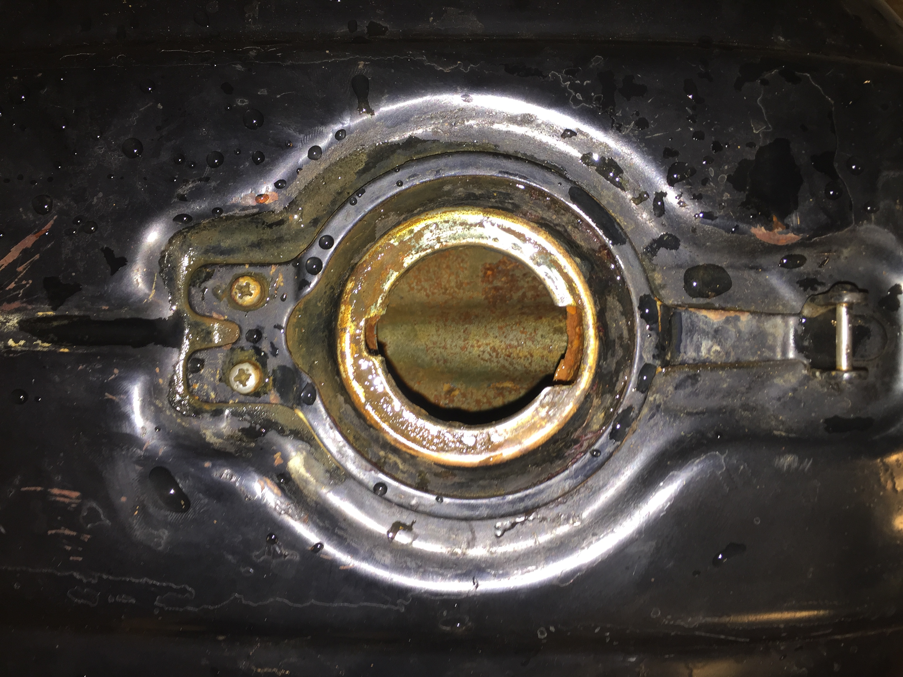
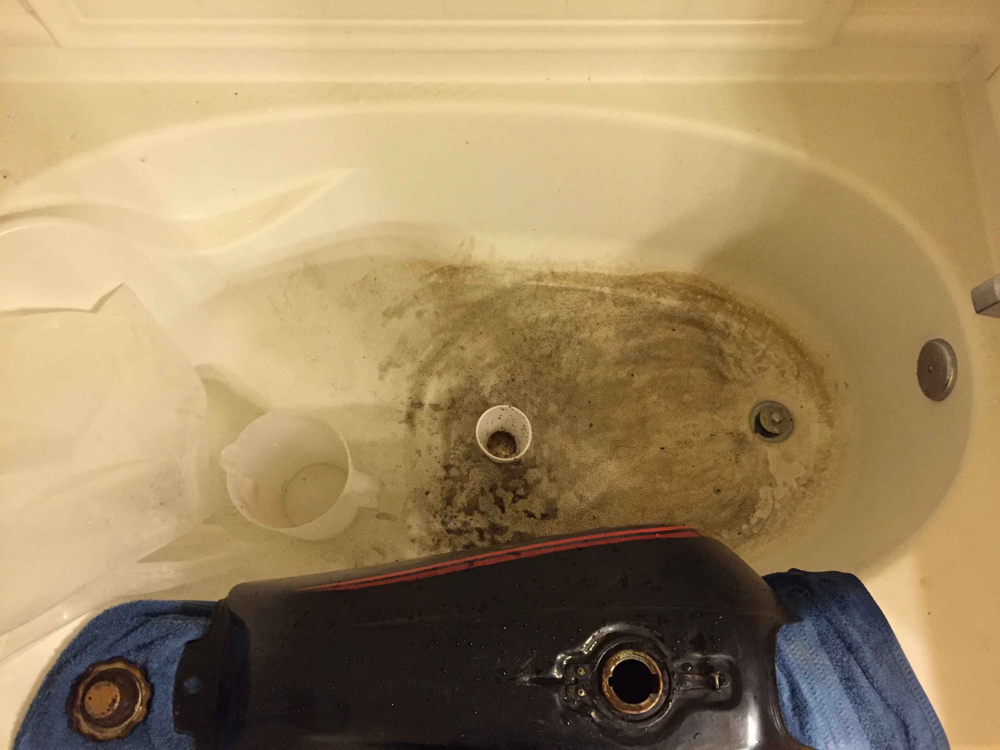
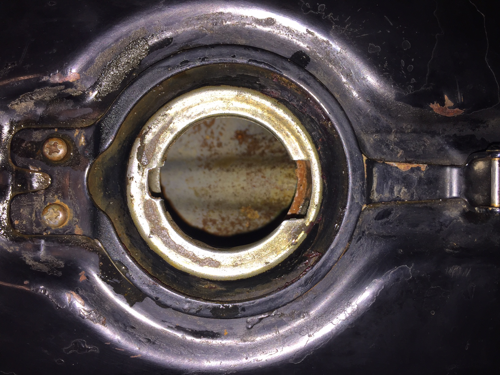

Cleaning the fuel tank
-
 The inside was pretty badly rusted. I'm going to fill it with vinegar and let it sit for a few days.
The inside was pretty badly rusted. I'm going to fill it with vinegar and let it sit for a few days.
-

I emptied out the vinegar and rinsed the tank out. There was so much rust and junk that came out, it was pretty nasty. The inside did look better after round one though! I'm going to put the vinegar back in and give it a couple more days to soak.
-

I probably wouldn't recommend doing this in your bathtub though...it took a long time to get that clean again!
-

I let the tank soak for a couple more days before I emptied it out again. It looks a lot better now.